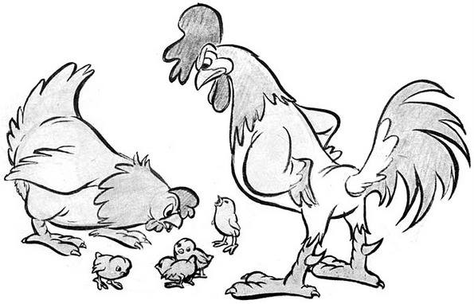

![🌸 Денес со вас ги споделуваме фотографиите на српската фотографка Јована Рикало (@jovanarikalo) за кои сме сигурни дека ќе ве однесат во светот на бајките!
🌸 Имено, Јована ја комбинира модата со природата за да создаде фотографии кои изгледаат како сцени од книги со бајки. Од мајка и дете облечени во балски фустани седнати на ливада до жена во бела наметка која води коњ низ поле со цвеќиња, секоја фотографија има моќ за миг да ве однесе во друг, поинаков, магичен свет.
🌸 Ви се допаѓаат ли? 😍
🌸 За повеќе информации, посетете го веб-порталот varicose-woman.github.io. 🤗
#инстаграм #инстафото #инстаграмџии ##иснтаграмџики #инстаграмџииmacedonia #инстаграмџикимакедонија #инстаграмџикиmacedonia #фотонаденот #природа #луѓе #живот #бајка #магија #магиченсвет](instagram-feed/img/placeholder.png)
Претходно
Што е проблемот со традиционалните семејни вредности?
Датум: 04 дек 2014
Коментари: исклучени
Во последните години кај нас е актуелна дебатата за семејните вредности според кои се уредени современите семејства. Промените во економските односи и, пред сè, поголемата еманципација на жените донесоа определени промени кои огромниот конзервативен дел од нашето општество не може лесно „да ги свари“. Сега веќе не е незамисливо оној кој не е среќен во бракот да се разведе, да се брка кариера пред да се оформи семејство, и воопшто среќата секој да си ја брка на свој начин. Сепак, тие промени некој ги перципира како погрешни, како нешта кои внесуваат дисхармонија во семејството и кои се виновни за тешките услови во кои растат децата.
И додека хармонија во семејството е прекрасна работа и сите тежнееме кон неа, некој постојано се обидува да ни каже дека има само еден правилен начин да се постигне тоа – преку традиционалните семејни вредности. А, тој начин е проблематичен. Затоа ние овде ќе се обидеме нив да ги спротивставиме со научниот аспект на работите пред да заклучиме колку тие вредности можат да понудат рамка за основање на здраво семејство.
Улоги во бракот и еднаквост на половите
Конзервативците го преферираат патријархатот. Иако постојано потсетуваат на тоа дека мажот треба да ја почитува жената, тој сепак тоа треба да го прави во рамките на патријархалните норми. Мажот е оној кој работи за да го обезбеди семејството, а жената ги работи домашните работи. Ако и двајцата се вработени, пак жената најчесто сама ги работи домашните работи, а не секој маж се чувствува комотно покрај жена која заработува повеќе. Затоа што мажот е главата на семејството. Неговиот збор мора да е последен, инаку тој не е прав маж. Тоа почнува да се менува, но сè уште имаме случаи во кои луѓе со влијание во општеството кои пропагираат ваков вид конзервативизам, како на пример во овој случај:
„Голем дел од браковите, за жал, се разведуваат заради горделивоста, заради тоа што сака секој да командува, заборавајќи на тоа дека глава на куќата е мажот, а жената е подвластена на мажот, но не во смисла да ѝ се одземени правата, таа има поголеми права од мажот, оти таа е онаа која ги воспитува децата, таа е душата на семејството“, владиката Петар од МПЦ во изјава за медиумите на 6 мај 2013.
Излишно е да се споменува дека ситуацијата во која едниот партнер му наметнува што било на другиот е нездрава ситуација која се смета за насилство и која може да доведе до ментални нарушувања. Иако помладите генерации сè почесто го одбегнуваат овој систем на односи во семејството, тој сепак продолжува да егзистира под изговорот дека тоа е едно од нештата кое ја симболизира меѓусебната почит која владее во семејството.

Женската сексуалност
Според сфаќањата во традиционалните култури, жената треба да има помал број сексуални партнери од мажот. Во спротивно, добива погрдна етикета која почнува на К. Ваквото убедување цврсто опстојува дури и кај луѓе кои уживаат углед на современи и кои не веруваат во претходните традиционални семејни вредности. За разлика од нив, научните студии не можат да најдат доказ дека сексуалните нагони зависат од полот. Оттаму, традиционалното сфаќање за женската сексуалност е гледиште донесено исклучиво од културен и вредносен аспект и нема врска со никакви биолошки или психолошки фактори.
Развод
Конзервативците, водени од принципите во светите книги, сметаат дека мажот и жената треба по секоја цена да останат во брак затоа што тоа е доживотна обврска на која ѝ се посветиле и од која не треба да се откажат. „Светата“ обврска не е силен аргумент, па тие додаваат дека родителите тоа треба да го сторат поради децата. Тврдат дека тоа ги повредува децата, па затоа родителите треба да останат во брак, колку и да добар или лош. Според нив и најлошиот брак е подобар од развод.
Точно е дека разводот ги повредува децата и тоа не може да се спори, но научните истражувања кажуваат и нешто друго. Според резултатите добиени од нив, ако некој е дете од разведени родители тоа не мора да значи и дека трпи одредени емоционални оштетувања кои подоцна ќе придонесат за психолошки проблеми, проблеми со законот, со учењето или со социјализацијата. Општо гледано, нема големи разлики помеѓу децата кои доаѓаат од семејства во кои нема хармонија во домот и оние во кои имало развод. И во двата случаи родителите не се сакаат, децата го гледаат тоа и помалку е битно дали потоа тие ќе се разведат или не. Доколку при разводот родителите ги стават децата на прво место, а не својата потреба да се одмаздат на партнерот заради уништените семејни сништа, тогаш последиците ќе бидат минимални. И самите деца велат дека така им е полесно.
Авторитет над децата
„Знаеш ли ти јас каков ќотек јадев кога бев на твои години? Не смеев да им писнам на постарите! Ќе слушаш и оро ќе играш! А вие сега многу права си земате. Каква е оваа младина, што ќе правиме со вас?“
Секој од нас слушнал вакво нешто и се чудел во какви ли нехумани времиња растел соговорникот. Но сепак, сите родители кои ги почитуваат традиционалните семејни вредности не ги тепаат своите деца, иако многумина сметаат дека имаат право да го сторат тоа „кога е потребно, од педагошки причини“. Поблагата верзија на ситуацијата која што ја создаваат традиционалните семејни вредности во овој случај се обврската на децата да ги почитуваат родителите до таа мерка што нивниот авторитет никогаш не треба да биде доведен во прашање.
За среќа, денеска сè повеќе родители употребуваат многу пософостицирани начини на воспитување, покажуваат многу повеќе љубов и се грижат за менталното здравје на своите деца. Јасно е дека авторитетот над нив и нивната слепа послушност не водат кон добро воспитување. Иако строго воспитаните деца можат да покажат добри манири на однесување, тоа не значи дека тие сакаат да се однесуваат на таков љубезен начин и веројатно ќе почнат да се однесуваат поинаку штом достигнат возраст на која им следува ослободување од родителските стеги. За разлика од нив, децата третирани со почит се развиваат во здрави личности.
Геј заедницата
Конзервативците не ги прифаќаат геј луѓето поради тоа што ги сметаат за нездрави луѓе со изопачено однесување. Секогаш ги спомнуваат како група поради која луѓето ќе престанат да се размножуваат и човештвото ќе исчезне поради нив. За склучување бракови или одгледување деца не може ниту да стане збор.
Иако хомосексуалноста одамна не се смета за болест, во нашето општество сè уште не се нашол лекар или психолог кој на македонски јазик ќе им објасни на луѓето дека хомосексуалците се здрави, дека нивната сексуална ориентација не е нивен свесен избор и дека тоа не ги прави нездрави. Дури и ако одгледуваат деца, тие не можат да им наштетат. Напротив, нивните деца можат да бидат подеднакво среќни како и оние на хетеросексуалните родители.
Абортус
Прашањето за абортусот претставува веројатно најконтроверзно прашање каде што конзервативците се судираат со оние со полиберални сфаќања. Проблемот овде е во тоа што работите не можат да се испитаат научно за да се добијат насоки кој пристап е правилен, а кој не. Ставот во врска со абортусот произлегува од личниот систем на вредности кои една личност веќе го има усвоено. Прашањето околу кое се води расправата е тоа во кој момент ембрионот или фетусот може да се смета за личност: дали во моментот на зачетокот, во моментот кога тоа може да преживее надвор од матката или во моментот на раѓање. Понатаму, постојат несогласувања и околу тоа дали абортусот е оправдан кога тоа го бара здравјето на жената или не, и дали здравјето на жената има приоритет над животот на идното бебе.
Потрагата по среќа
Постои дури и традиционално сфаќање за потрагата по среќа во животот: секој мора да се венча, се знае кога е време за брак, кога е време за деца, мора да се слушаат постарите, мора да бидете религиозни… Сè се тоа работи кои се наметнати од општеството, но не мора да ги правите. Патот кон сопствената среќа не може да биде стандардизиран. Не може својот живот да го претворите во средство со кое ќе се докажувате пред другите. Човек може да биде среќен ако живее според традиционалните семејни вредности, но нивното слепо почитување кога чувствувате дека не ви одговараат може да ве доведе во заблуда за среќата и понекогаш ќе ве натераат да правите работи со кои само ќе се залажувате дека ќе бидете среќни.